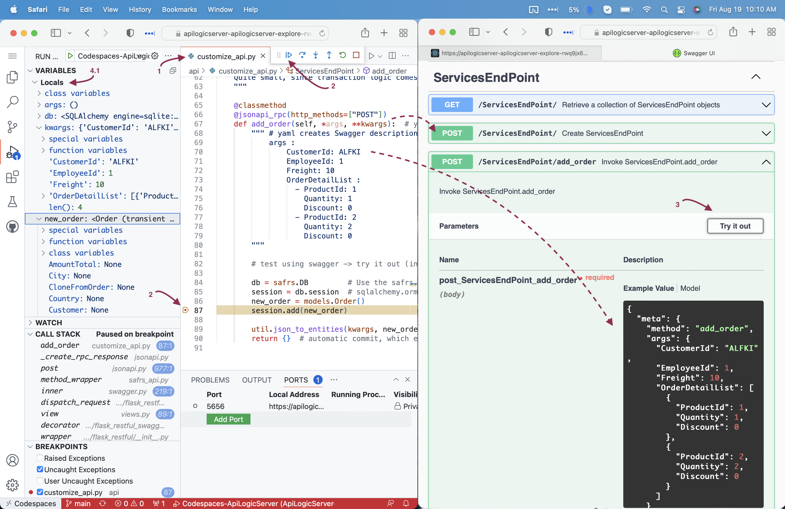
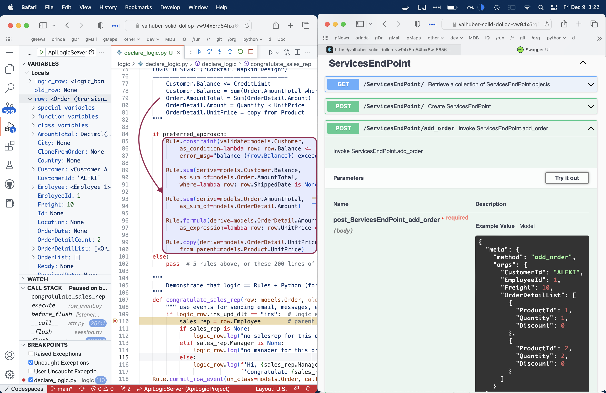

Detailed Tutorial
About this Detailed Tutorial
Use this Detail Tutorial to introduce using API Logic facilities, and for coding examples. Use your IDE to search for #als -- you'll a list of examples we believe you'll find useful.

It is designed for these scenarios:
-
You are using codespaces / VSCode, open to either the tutorial project, or app_fiddle.
-
You are using a local install (pip install) version of API Logic Server, and have reviewed the tutorial readme.
-
You are using a docker version of API Logic Server, and have reviewed the tutorial readme.
-
Projects are pre-configured for VS Code with
.devcontainerandlaunch configurations,so these instructions are oriented around VS Code. -
You are reviewing the docs, and want to get a sense of the software
In this tutorial, we will explore:
-
create - we will briefly review what actually happens during the create process.
-
run - we will first run the Admin App and the JSON:API. These will illustrate how automation creates an app and API from a data model. You can then infer what you'd get for one of your databases.
-
customize - we will then explore some customizations already done for the API and logic, and how to debug them.
Key Underlying Concepts
This tutorial illustrates some key concepts:
Declarative Models, not code
Observe that the files for the Admin App and API are models that describe what, not how. This makes it much easier to understand than large amounts of generated code.
Preserve Customizations
The system is designed to enable rebuild, so you can iterate the data model - without losing your customizations. In general, such customizations are kept in separate files from the model files. So, the model files can be rebuilt without affecting customization files.
Logic Automation
A unique feature of API Logic Server is provision for spreadsheet-like rules, customizable with Python. Rules address update logic (multi-table derivations and constraints), and security (authorization).
Create

The diagram above summarizes the create / run / customize process. When you issue the ApiLogicServer create CLI command, the system reads your schema and creates a customizable API Logic Project.
It's a video - click to view.
Create and establish Python Environment
After creation, you must establish your Python environment:
- This is already complete for Codespace users
- Other users - please see Quick Start > Express Install. Note there are different instructions, depending on how your install / IDE.
Start the Server and Admin App
Stop any running servers that might still be running from the readme - (square red button at top in "Show me how", below).
Now (see Show me how, below, for details):
- Start the server with Run and Debug >> 2. API Logic Project: Instant, Open, and then
- Start the Browser at localhost:5656 by clicking the url shown in the console log.
Show me how
To run the ApiLogicProject app:
-
Start the Server:
- Click Run and Debug
- Use the dropdown to select 3. API Logic Project: Logic, and
- Click the green button to start the server
-
Start the Browser at localhost:5656 by clicking the url shown in the console log.

Run
With the server started and the Admin App open in your Browser, we are ready to explore the Admin App and the API.
Admin App: Multi-Page, Multi-Table, Automatic Joins
After starting the server and browser, explore the Admin App in your browser:
- Navigate to
Customer- Depending on your screen size, you may need to hit the "hamburger menu" (top left) to see the left menu
- Depending on your screen size, you may need to hit the "hamburger menu" (top left) to see the left menu
- Click the first Customer row to see Customer Details
- Observe the
Placed Order Listtab at the bottom - Click the first Order row
- Observe the
Order Detail Listtab at the bottom -
Observe the elements shown in the diagram
- Multi-Page - 2 pages for each table (list, with search, and display)
- Multi-Table - database relationships (typically from foreign keys) used to build master/detail pages
- Automatic Joins - the Order Detail table contains
ProductId, but the system has joined in theProduct Name. You can edit theadmin.yamlfile to control such behavior.
-
Leave the server and browser running

Key Take-away: instant multi-page / multi-table admin apps, suitable for back office, and instant agile collaboration.
JSON:API - Related Data, Filtering, Sorting, Pagination, Swagger
Your API is instantly ready to support ui and integration development, available in swagger, as shown below. JSON:APIs are interesting because they are client configurable to reduce network traffic and minimize organizational dependencies.
The creation process builds not only the API, but also swagger so you can explore it. The Admin App Home page provides a link to the swagger. In the browser:
- Click Home to open the Home Page
- Click "2. API with oas/Swagger" to see the swagger
- (Leave the swagger and server running)

Key Take-away: instant rich APIs, with filtering, sorting, pagination and swagger. Custom App Dev is unblocked.
Customize and Debug
That's quite a good start on a project. But we've all seen generators that get close, but fail because the results cannot be extended, debugged, or managed with tools such as git and diff.
Let's examine how API Logic Server projects can be customized for both APIs and logic. We'll first have a quick look at the created project structure, then some typical customizations.
To run the customized app:
- Stop the server
- Restart the server with Run and Debug >> 3. API Logic Project: Logic, and then
- Start the Browser at localhost:5656 by clicking the url shown in the console log.
- Re-access the swagger, and authorize (see below): * Click "2. API with oas/Swagger" to see the swagger (as you did above) * Get an access_token and authorize (see Show me how, below)
Show me how
Get access_token:
- Click the
auth/Postendpoint (at the end of the swagger) - Click Try it out
- Click Execute (you'll need to scroll down a bit)
- Copy the
access_tokento your clipboard

Authenticate with your access_token
- Scroll up to the top of the swagger, and click Authorize
- Enter Bearer, add a space, paste your
access_token, click Authorize, and Close the dialog

Project Structure
Use VS Code's Project Explorer to see the project structure under 3. ApiLogicProject_Logic:
| Directory | Usage | Key Customization File | Typical Customization |
|---|---|---|---|
api |
JSON:API | api/customize_api.py |
Add new end points / services |
database |
SQLAlchemy Data Model Classes | database/customize_models.py |
Add derived attributes, and relationships missing in the schema |
logic |
Transactional Logic | logic/declare_logic.py |
Declare multi-table derivations, constraints, and events such as send mail / messages |
security |
Admin App | security/declare_security.py |
Control role-based access to data rows |
integration |
Consume Kafka Messages | integration/kafka/kafka_consumer.py |
Application Integration |
ui |
Admin App | ui/admin/admin.yaml |
Control field display, ordering, etc. |

Let's now explore some examples.
Admin App Customization
There is no code for the Admin app - it's behavior is declared in the admin.yaml model file. Alter this file to control labels, hide fields, change display order, etc:
- In your IDE, open Explorer > 3. ApiLogicProject_Logic/ui/admin/admin.yaml
* Find and alter the string
- label: 'Placed Order List'(e.g, make it plural) * Click Save - Load the updated configuration: in the running Admin App, click Configuration > Reset and Apply
- Revisit Customer > Order to observe the new label
Key Take-away: you can alter labels, which fields are displayed and their order, etc -- via a simple model. No need to learn a new framework, or deal with low-level code or html.
API Customization
While a standards-based API is a great start, sometimes you need custom endpoints tailored exactly to your business requirement. You can create these as shown below, where we create an additional endpoint for add_order.
To review the implementation:
- In your IDE, open Explorer > 3. ApiLogicProject_Logic/api/customize_api.py:
- Set the breakpoint as shown in
add_order - Use the swagger to access the
ServicesEndPoint > add_order, and - Try it out, then
- execute
- Your breakpoint will be hit
- You can examine the variables, step, etc.
- Click Continue on the floating debug menu (upper right in screen shot below)

Logic
API and UI automation are impressive answers to familiar challenges. Logic automation is a unique answer to a significant and unaddressed problem:
For transaction systems, backend constraint and derivation logic is often nearly half the system. This is not addressed by conventional approaches consisting only of "your code goes here".
The logic portion of API Logic server is a declarative approach - you declare spreadsheet-like rules for multi-table constraints and derivations. The 5 rules shown below represent the same logic as 200 lines of Python - a remarkable 40X.
Since they automate all the re-use and dependency management, rules are 40X more concise than code. Like a spreadsheet, rules watch for changes, react by automatically executing relevant rules, which can chain to activate other rules; you can visualize the process here.
Logic consists of rules and conventional Python code. Explore it like this:
- Open Explorer > 3. ApiLogicProject_Logic/logic/declare_logic.py: * Observe the 5 rules highlighted in the diagram below. These are built with code completion.
- Set a breakpoint as shown in
congratulate_sales_rep* This event illustrates that logic is mainly rules, customizable with standard Python code - Using swagger, re-execute the
add_orderendpoint - When you hit the breakpoint, expand
rowVARIABLES list (top left)

Internally, rules execute by listening to SQLAlchemy before_flush events, as described here.
This rule architecture ensures that rules are always re-used across all client applications and integrations. This avoids common "fat client" approaches that embed logic in user interface controllers, which leads to replication and inconsistency.
Security Logic
The declarative approach addresses not only multi-table derivations and constraint logic, it addresses security. This controls who can login, and what data they see.
The overview Tutorial noted how grants on the Category table controlled what rows users like u1 and u2 were able to see. The grant logic is in security/declare_security.py. For more on security, see here.
Test
You can test using standard api and ui test tools. We recommend exploring the Behave framework. This can be used as part of an overall agile approach as described in the Logic Tutorial.
TL;DR - features and test scripts are predefined in the sample; to run them (with the server running):
- Run Launch Configuration
Behave Run Behave - Run Launch Configuration
Behave Logic Report - Open
test/api_logic_server_behave/reports/Behave Logic Report.md
The sample Scenarios below were chosen to illustrate the basic patterns of using rules. Open the disclosure box ("Tests - and their logic...") to see the implementation and notes.
For more information, see Testing with Behave.
Wrap up
Let's recap what you've seen:
-
ApiLogicProject Creation and Execution - a database API and an Admin App - created automatically from a database, in moments instead of weeks or months
-
Customizable - the UI, API and Logic - using Visual Studio code, for both editing and debugging
Next Steps
After the Tutorial, these are excellent next steps:
- Try other databases - here are some installed samples, and try your own
- Explore the Logic Tutorial.
Docker cleanup
VS Code leaves the container and image definitions intact, so you can quickly resume your session. You may wish to delete this. It will look something like vsc-ApiLogicProject....